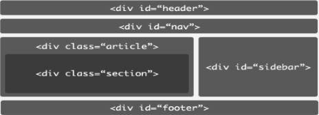
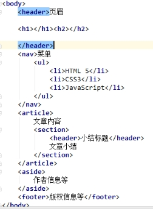

网页基本结构

h5的网页结构
datalist的用法
meta标签的用法
@media max-with 与 max-device-width区别
说明：max-with 是浏览器的宽度，max-device-width是设备显示器的宽度。
< html lang="zh-CN">告诉搜索引擎页面为中文(大陆地区)
标签尽量结构和表现分离，尽量使用语义化标签，但要尽量使用最少的标签保持最小的复杂度，实用为王！
使用适当的元素，上下结构：header做页眉、nav做导航、ul商品列表、footer页脚；左右结构：float和table-cell
1em=16px,em主要在新闻编辑的时候使用（根据字体的大小来确定行高）
自适应布局使用相对值（%, em,rem）,相对于html和body
table-cell与float区别(一个打死不换行,一个自动换行)：
Table / table-cell
1、如果没有设置< table >的宽度，td会尽量向左上靠齐。
2、如果某一个td的高度发生了改变，那么所有的td的高度都发生了改变。
3、即使td的总体宽度超过了屏幕，也是在一行显示。
Float
1、屏幕水平宽度不足的时候，可以自动换行。做高保真商品图片展示。
何时用image,何时用background-image:
1、如果图片是商品图片，使用img
2、如果图片是一个很多icon合成的图 background-image.
3、如果公司给的就是一张完整的LOGO。此时用img就可以。
src与href的区别：
src: 同步。如果该资源没有下载完成，浏览器会一致等待下载完毕后再渲染页面。
Href：异步，我不管该资源有无下载完成，我继续渲染我的页面。
inline/inline-block/block:
Inline : span a i ...
不可以设置width ， height , 上线的padding 和 margin.
Inline-block : img 表单元素
可以设置width ， height , padding 和 margin.
Block: 容器元素（做布局的）header footer nav article section , aside , div / 段落p, 收集表单信息的form，无序列表ul, 有序列表 ol , 表格 table 标题h1~h6等
可以设置width ， height , padding 和 margin. 独自占有一行。
padding终极详解：
情况一：
如果是行内元素，eg：span，没有设置具体宽度时，它不会继承父元素的宽度。内容区的宽度是auto，给它设置一个padding时，padding的值相当于此行能装下内容的宽度-文本的宽度。不会把盒子撑大。超过此行宽度就会换行。
情况二：
如果span，设置具体宽度时，内容区的宽度是设置值（box-sizing=conten-box的情况），给它设置一个padding时，padding的值会把盒子撑大，盒子的内容区不变。
情况三：
如果是块级元素，eg：div，没有设置具体宽度时，它会继承父元素的宽度。内容区的宽度是父元素的宽度，给它设置一个padding时，不会把盒子撑大，原有内容区（540px）- padding=现在的内容区。
情况四：
如果是块级元素，eg：div，设置具体宽度时，不管是百分比还是px，内容区的宽度是设置值，给它设置一个padding时，会把盒子撑大，内容区不变。
Collapsing margin.
发生条件：
1、子元素与父元素必须都是display: block
现象：
1、父元素和子元素公用了margin-top，margin-bottom:
2、子元素和子元素公用了上下margin，且使用外边距较大的元素作为公共的margin。如果某一个元素的外边距为负数，那么margin是取他们的和。
怎么解决：
1、给父元素加一个边框。
2、加入文本，可以分割父元素和子元素的margin-top.
3、给父元素增加内边距；